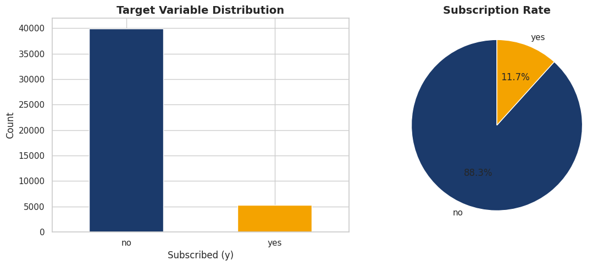
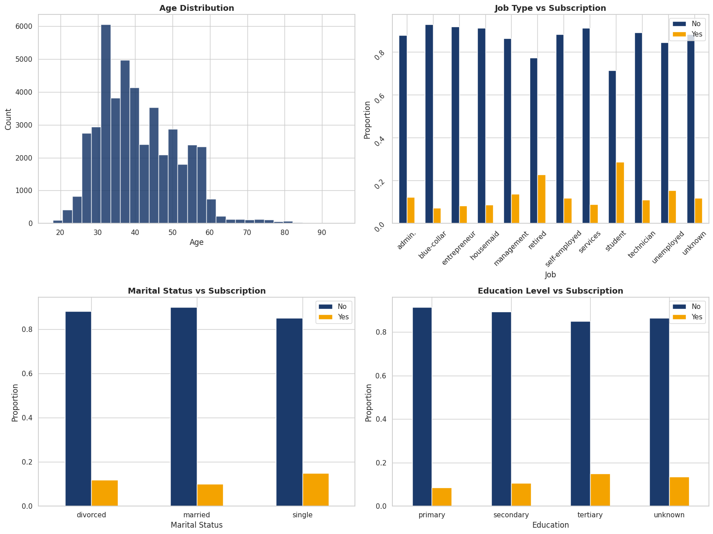
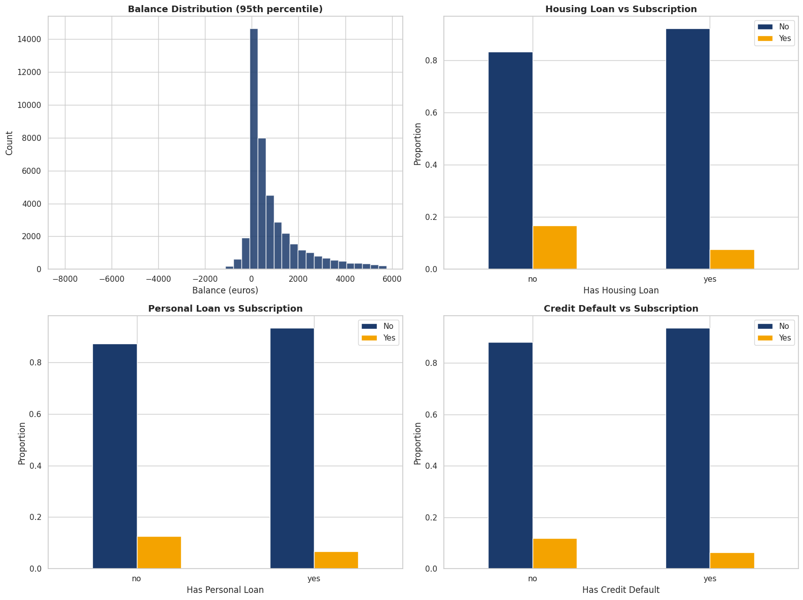
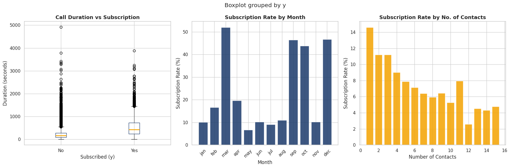
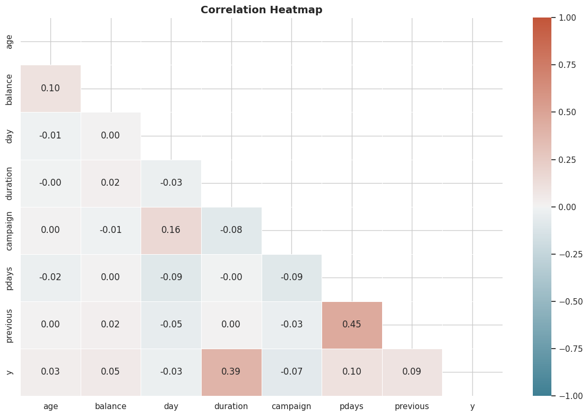

Digging deep into patterns, distributions, and insights before modeling
Why we explore before we model
Exploratory Data Analysis (EDA) is the process of analyzing datasets to summarize their main characteristics — using visual methods and statistics before applying any ML model.
In this project, EDA helped us understand:
Understanding the data structure
We loaded the bank-full.csv dataset from the UCI Machine Learning Repository containing bank marketing campaign data. Let's examine the structure, data types, missing values, and duplicates.
# Load dataset
df = pd.read_csv('bank-full.csv')
# Display structure
print("Shape:", df.shape)
print("\nData Types:")
print(df.dtypes)
print("\nMissing Values:")
print(df.isnull().sum())
print("\nDuplicate Rows:", df.duplicated().sum())
Descriptive statistics for numerical features
| Feature | Mean | Std Dev | Min | 25% | 50% | 75% | Max |
|---|---|---|---|---|---|---|---|
| age | 40.9 | 10.6 | 18 | 33 | 39 | 48 | 95 |
| balance | 1,362.3 | 3,044.8 | -8,019 | 69 | 448 | 1,428 | 102,127 |
| day | 15.8 | 8.8 | 1 | 8 | 16 | 21 | 31 |
| duration | 258.2 | 257.5 | 0 | 103 | 180 | 319 | 4,918 |
| campaign | 2.8 | 3.1 | 1 | 1 | 2 | 3 | 56 |
| pdays | 40.2 | 100.1 | -1 | -1 | -1 | -1 | 871 |
| previous | 0.6 | 2.8 | 0 | 0 | 0 | 0 | 275 |
How balanced is our target variable?

The target variable y is heavily imbalanced:
Who are the bank's customers?

How do balance and loans affect subscription?

How does the campaign itself affect the outcome?

How do features relate to each other?

What we learned from the data
88% of customers said NO — SMOTE was essential to create a fair training dataset.
Call duration is the strongest predictor — longer calls mean more engaged customers.
Customers without housing or personal loans are significantly more likely to subscribe.
Campaigns in March, September, and October achieve higher conversion rates.
Tertiary-educated customers are more financially aware and more likely to invest in term deposits.
A successful previous campaign outcome is one of the strongest indicators of a new subscription.